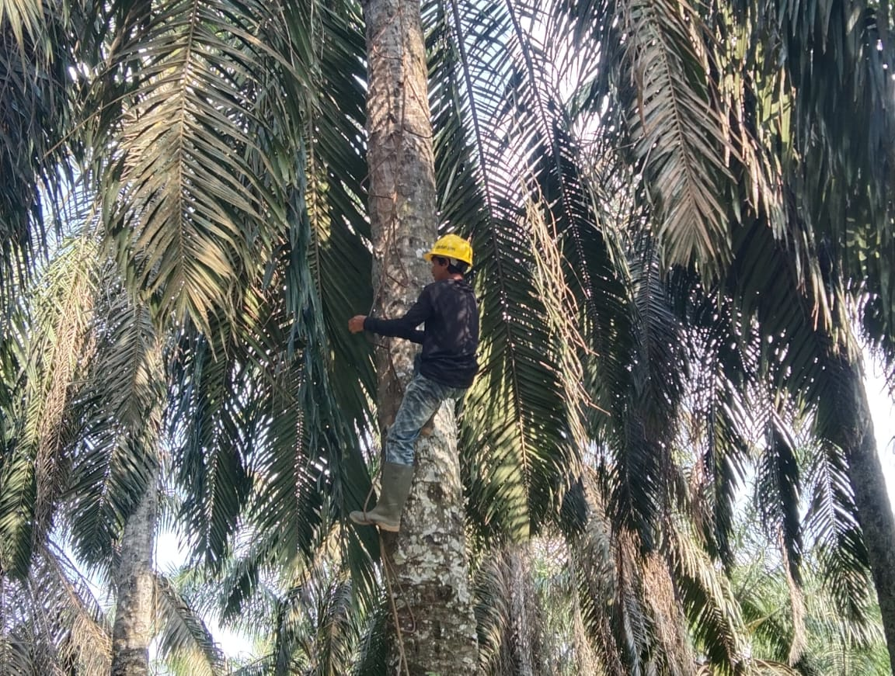
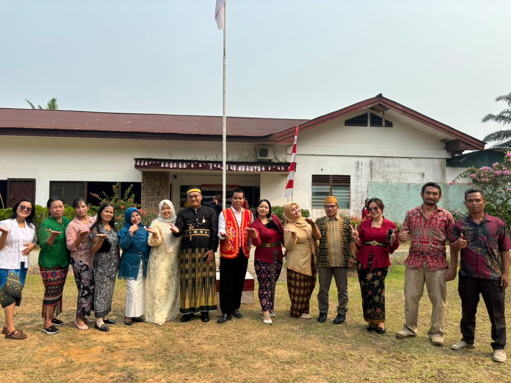
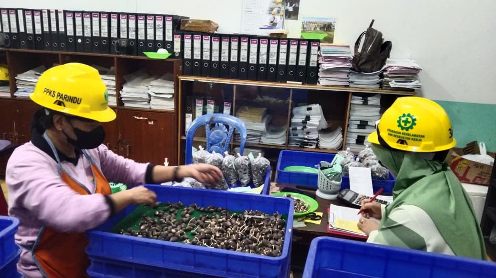
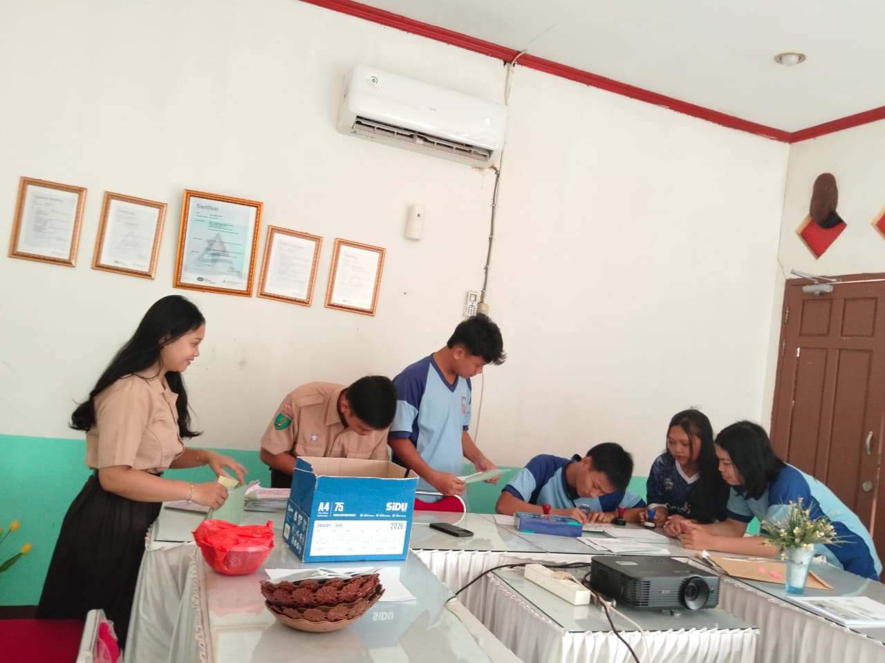

Seleksi pohon induk
Memilih pohon induk yang memenuhi persyaratan sebagai sumber bahan genetik.
Mengenal kegiatan, proses produksi benih, varietas, dan informasi pemesanan bahan tanam kelapa sawit.
Pelajari Proses BenihTENTANG KAMI
PPKS Parindu merupakan salah satu lokasi kegiatan penyediaan benih kelapa sawit. Proses produksi benih dilakukan melalui tahapan terkontrol untuk menjaga mutu dan keaslian bahan tanam.
PROFIL
Informasi jabatan yang ditampilkan perlu disesuaikan kembali dengan susunan organisasi terbaru dari pihak PPKS Parindu.
KESELAMATAN KERJA
Pemanjatan pohon kelapa sawit dilakukan menggunakan alat bantu berupa besi yang dibentuk menyerupai tangga dan memiliki beberapa pijakan kaki. Alat tersebut dilengkapi bagian ujung yang berfugsi sebagai pengait atau penahan pada pohon kelapa sawit. Alat ini membantu pekerja melakukan pemanjatan untuk menjangkau bagian atas pohon dalam kegiatan pemeriksaan dan penyerbuka.
Bagian ini merupakan informasi keselamatan kerja, bukan panduan teknis untuk melakukan pemanjatan.
PRODUKSI BENIH
Berikut gambaran ringkas proses produksi bahan tanam kelapa sawit. Tahapan operasional dapat mengikuti standar dan prosedur resmi PPKS.
Memilih pohon induk yang memenuhi persyaratan sebagai sumber bahan genetik.
Bunga betina diserbuki menggunakan serbuk sari dari tetua jantan terpilih dengan pengawasan petugas.
Buah hasil persilangan berkembang dan diperiksa sesuai standar mutu benih.
Benih diproses, dibersihkan, dan diseleksi untuk memastikan kesesuaian mutu.
Benih melalui perlakuan perkecambahan terkontrol hingga muncul kecambah.
Kecambah yang memenuhi persyaratan mutu dapat disiapkan sebagai salah satu produk bahan tanam.
Bibit muda pada tahap awal pertumbuhan. Kondisi dan ketersediaannya mengikuti ketentuan penjualan.
Bibit yang telah melewati masa awal pembibitan dan memerlukan perawatan teratur.
Bibit yang lebih besar dan telah melalui masa pembibitan lebih lanjut. Kelayakan jual mengikuti standar mutu.
PILIHAN BAHAN TANAM
Daftar berikut memuat contoh varietas yang berkaitan dengan sumber benih PPKS. Harga resmi per butir belum dapat dipastikan dari sumber publik, sehingga tidak dicantumkan angka perkiraan agar tidak menyesatkan.
| Varietas | Keterangan singkat | Harga per butir |
|---|---|---|
| DxP Simalungun | Varietas hasil persilangan Dura × Pisifera. | Rp7.000-15.000 |
| DxP Yangambi | Salah satu varietas unggul yang diproduksi PPKS. | Rp7.000-15.000 |
| DxP Langkat | Salah satu varietas yang tercantum pada sumber benih PPKS. | Rp7.000-15.000 |
Harga dapat berbeda menurut bentuk produk (kecambah atau bibit), varietas, umur bibit, dan ketentuan penjualan.
LAYANAN
Tentukan varietas serta bentuk produk yang dibutuhkan, seperti kecambah atau bibit.
Hubungi petugas resmi PPKS Parindu untuk memastikan stok, harga, dan persyaratan pembelian.
Siapkan nama pemesan, alamat, nomor kontak, fotocopy KTP, Kartu keluarga, surat lahan (SKT/SERTIFIKAT), Matrai.
Ikuti instruksi pembayaran, dokumen, pengambilan, atau pengiriman dari pihak PPKS.
Website ini belum terhubung ke sistem pemesanan resmi. Jangan melakukan pembayaran sebelum memverifikasi rekening dan instruksi langsung dari petugas PPKS.
DOKUMENTASI
Empat foto berikut merupakan tempat gambar dokumentasi. Ganti dengan foto kegiatan asli yang diizinkan untuk dipublikasikan.




Pusat Penelitian Kelapa Sawit Parindu
Hubungi kami untuk informasi mengenai produk, kecambah, bibit kelapa sawit, layanan, dan pemesanan.
PPKS Parindu
Dusun Sengawan Hilir, Desa Binjai
Kecamatan Tayan Hulu
Kabupaten Sanggau
Kalimantan Barat.
Nomor telepon resmi PPKS Parindu
• Andi Putra Damanik: 0812-6945-3728
• Nurfadilla Clara: 0856-5362-292
Silakan lengkapi formulir berikut untuk menghubungi kami. Semua kolom wajib diisi.
TEMUKAN KAMI
Binjai, Kecamatan Tayan Hulu, Kabupaten Sanggau, Kalimantan Barat.
Buka Petunjuk LokasiPastikan alamat dan titik peta dikonfirmasi kembali sebelum kunjungan.